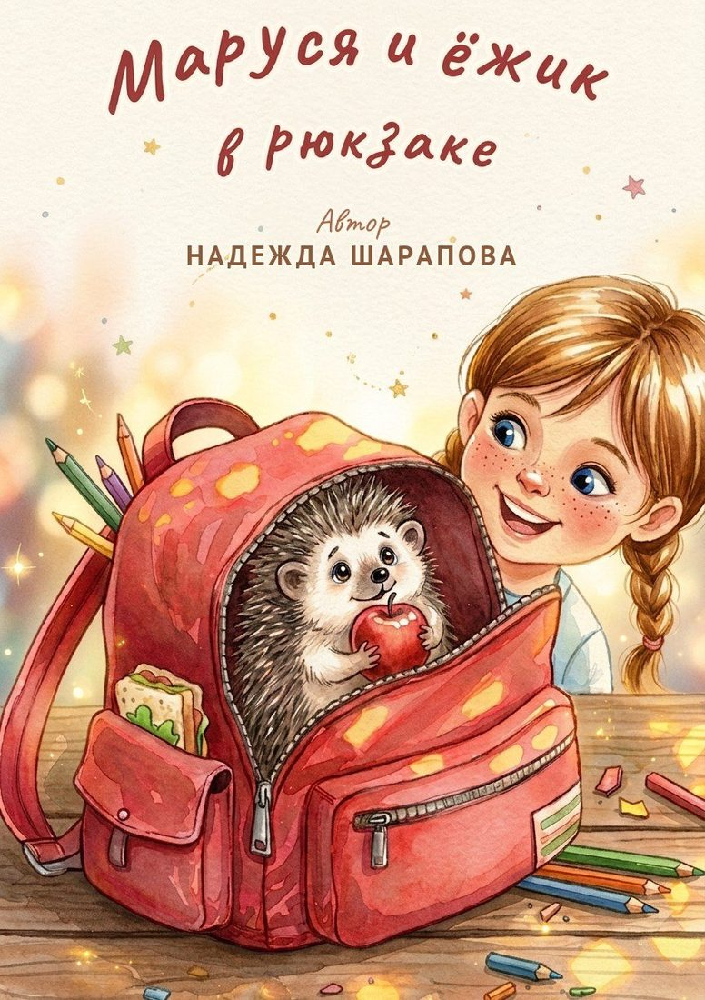
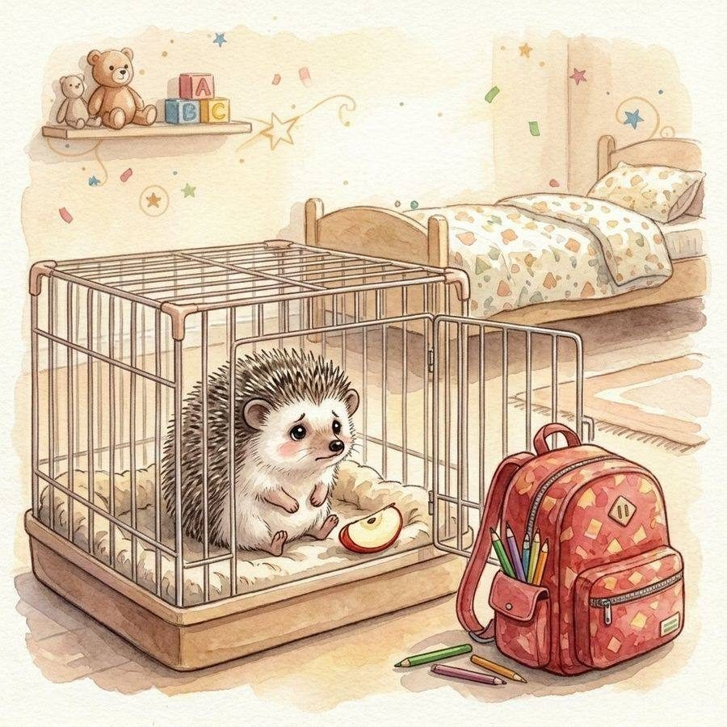

МарусяКоричкаМне семь. Я задаю очень много вопросов, теряю резинки, придумываю истории про соседей и замечаю то, чего не замечает никто. Взрослые называют это «витает в облаках». Я называю это работой.
Придумывать истории, задавать вопросы, приключения.
Скучать и когда взрослые говорят: «Потом».
Замечать то, чего другие не замечают.
Коричка.
«Мир Маруси» — не серия книг, а вселенная. Книга рассказывает историю, дневник даёт её продолжить, workbook превращает в игру, а коллекция делает осязаемой.
Для детей 6–9 лет, которые только полюбили читать сами, и для родителей, которым важно, чтобы книга была красивой, доброй и без назидания.
Каждая история сначала проверяется на детях, потом рисуется, потом печатается. Мы не публикуем то, чего ещё нет: товары в разработке честно помечены статусом «Скоро».
Колючий снаружи, надёжный внутри. Однажды он доехал до школы прямо в Марусином рюкзаке — и с этого началась вся история.
Он фыркает, прячется под диваном и любит яблоки. Разговаривать не умеет, но знает про Марусю больше, чем кто-либо.
Все персонажи